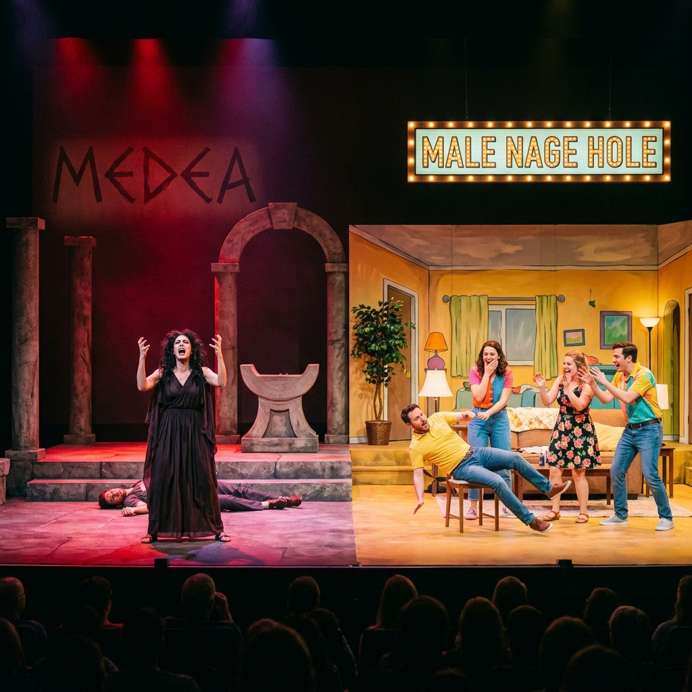
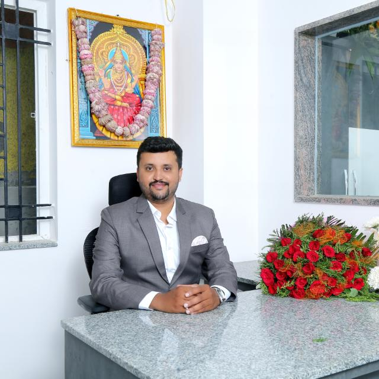
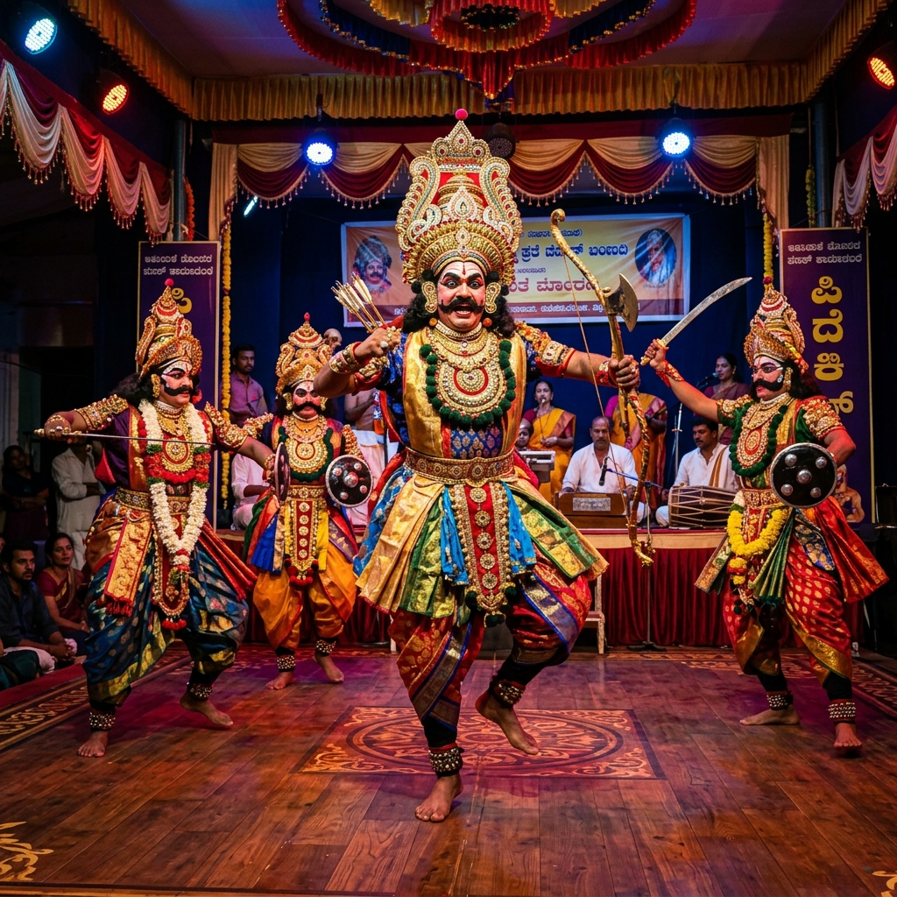
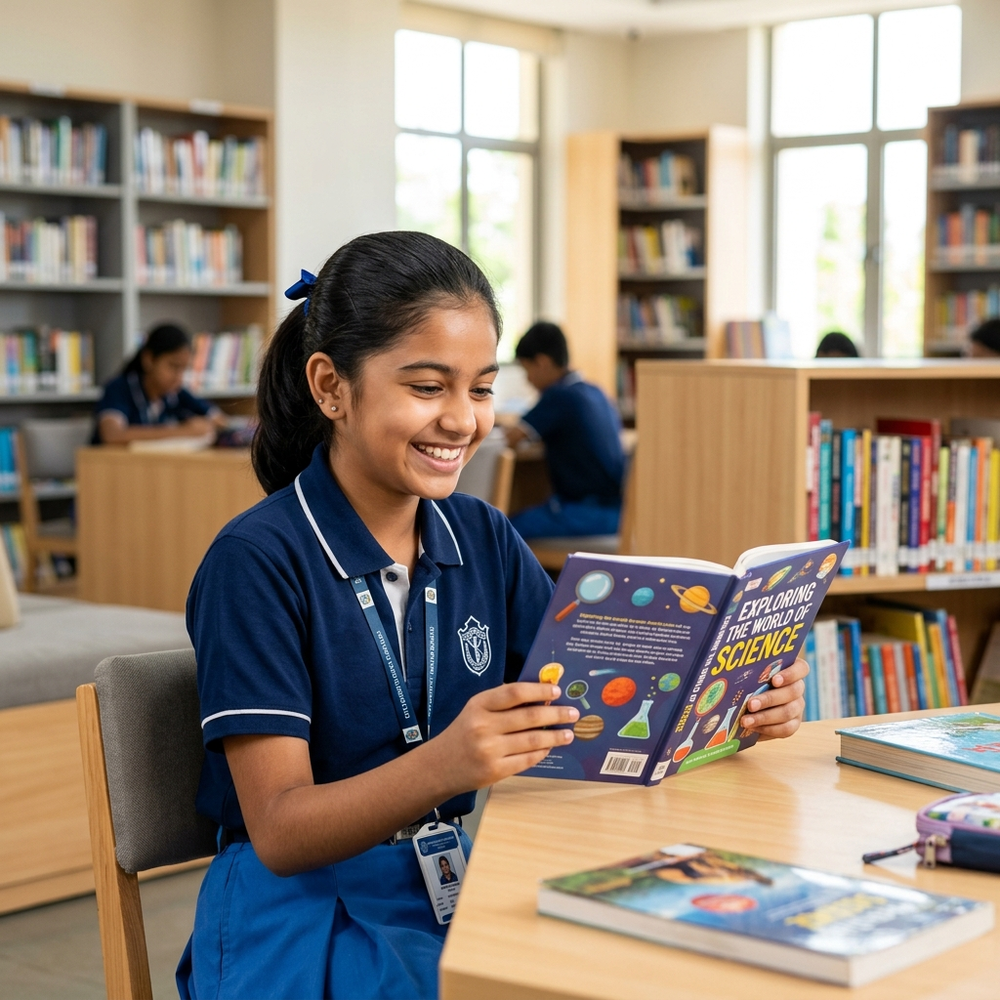
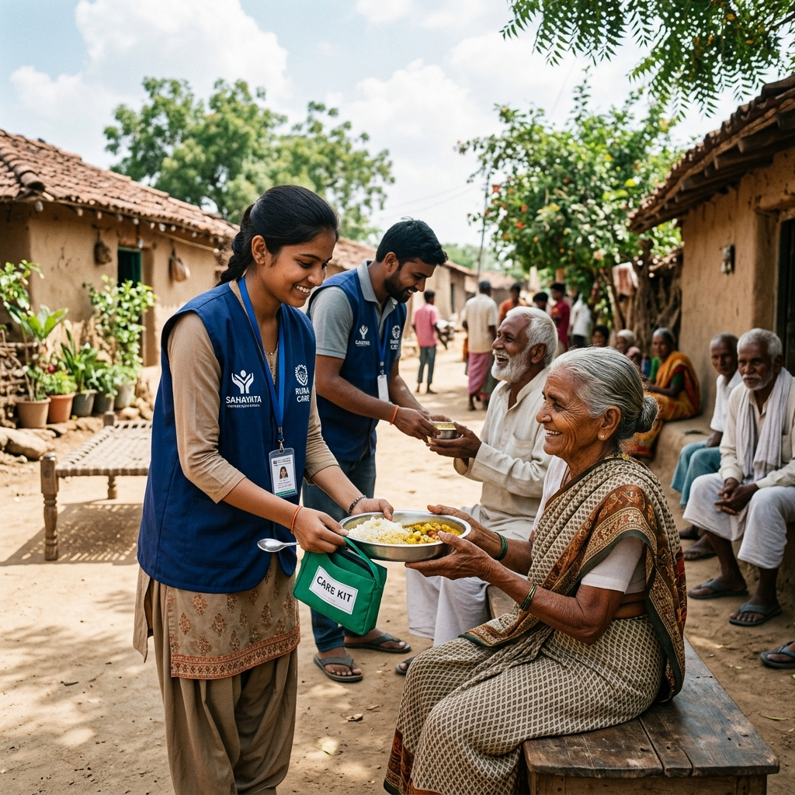

Nenapu Trust
A decade of art, community empowerment, and social responsibility across Karnataka.
Founded in 2012, Nenapu began with a group of passionate college graduates actively involved in theatre and folk art. Finding ourselves at a graduation crossroads, we united with a single vision: to preserve Karnataka's rich cultural roots while empowering lives.
Over the years, our team has staged over 2,000 street plays raising awareness on critical social issues—such as disease prevention, voter education, and workers' rights—in collaboration with the Election Commission, Health Department, and numerous NGOs.
Our dedication to folk forms like Kamsale, Dollu Kunitha, and Pooja Kunitha has taken us to prestigious stages globally, including international tours representing Indian folk heritage in Singapore (2013 and the 2019 Esplanade Folk Festival) and Europe (2016).






President & Co-Founder, Nenapu Trust
"At Nenapu, our vision is simple yet profound: to blend education, art, and social impact to build a stronger society."
Over the years, my journey in theatre and education has shown me how performance can raise awareness and how knowledge can change lives. Staging over 2,500 street plays and directing or performing in more than 200 shows globally has taught me that culture is a living, breathing force.
When we co-founded Shree Daksha Academy Degree College in 2022, our goal was to provide quality education and empower youth. That same spirit drives Nenapu. Whether we are supporting students through the Saraswati Vidyadhan Scholarship, safeguarding folk heritage, or running rural healthcare camps, we are committed to making a difference.
We invite you to join us in this journey of preservation and empowerment.
President & Co-Founder, Nenapu Trust
Principal, Shree Daksha Academy Degree College · State Best Actor Awardee
Three pillars that guide every initiative we take up for our communities.

Safeguarding folk arts, classical music, traditional literature, and heritage through workshops, documentation drives, and community festivals that keep our living traditions alive.

Providing scholarships, building libraries, distributing science kits, and training teachers in rural areas — so every child has access to quality education regardless of their background.

Organizing rural healthcare camps, disaster relief operations, and community kitchens — reaching the most vulnerable members of society with compassion and dignity.